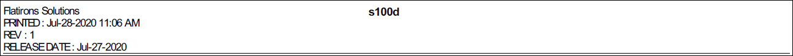
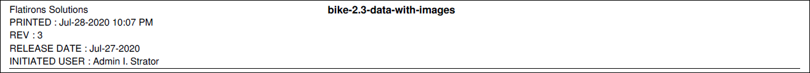
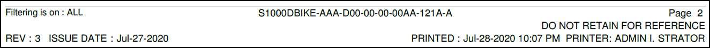
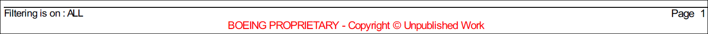

Non applicable pour Pinpoint Standalone Light.
- En-tête / pied de page personnalisé
Vous pouvez configurer un en-tête et un pied de page personnalisés pour qu'ils apparaissent sur vos documents imprimés. Les fichiers Header.html et Footer.html par défaut sont inclus avec votre installation. Vous pouvez copier et modifier les fichiers par défaut pour ajouter vos personnalisations lors de l'impression. Administrateurs, reportez-vous à "Configuration d'un en-tête pied de page personnalisé" pour les documents imprimés dans le Flatirons Pinpoint Configuration Guide.
- Voici des exemples d'en-tête/pied de page par défaut:Voici des exemples d'en-tête/pied de page personnalisé:

En-tête par défaut

Pied de page par défaut

En-tête personnalisé

Pied de page personnalisé
Vous pouvez configurer un en-tête et un pied de page propriétaires pour qu'ils apparaissent sur vos documents imprimés. Comme pour le processus de création d'un en-tête et d'un pied de page personnalisés, vous pouvez copier et modifier les fichiers par défaut pour ajouter les informations propriétaires. Lorsque cette option est activée, vous pouvez appliquer un en-tête ou un pied de page propriétaire à une publication en sélectionnant par Default metadata kit dans le menu déroulant Metadata Kit.
Faire référence à "Enabling Proprietary Messages for Metadata" et "Configuring a Proprietary Message in Header/Footer for Printed Documents" dans Flatirons Pinpoint Configuration Guide.Voici un exemple de pied de page propriétaire:Remarque : Cette fonctionnalité est actuellement activée pour le générateur iSpec 2200 (tous les types de publication), le générateur S1000D (toutes les révisions, types de publication) et le générateur KCA.
Pied de page propriétaire
- Barres de révision / COC
- S'il est configuré, le document est imprimé avec les barres Révision / COC qui marquent le contenu nouveau / modifié. Comment ce Le marquage de révision affiché dépend de la configuration de marque de révision configurée par votre administrateur. Administrateurs, reportez-vous à la section "Configuration de la barre de révision" du Flatirons Pinpoint Configuration Guide.
- Taille de police
Par défaut, la taille de la police d'impression d'un fichier PDF est de 10 pt. Votre administrateur peut modifier la taille de la police utilisée lors de imprimer un PDF. Administrateurs, reportez-vous à la section Paramètres d'impression au format PDF" du Flatirons Pinpoint Configuration Guide pour plus d'informations à ce sujet et sur d'autres paramètres d'impression.
- Option d'impression pour Références intégrée
Si elle est configurée pour imprimer, la case à cocher Références intégrée est disponible dans la boîte de dialogue Options d'impression . Si elle n'est pas configurée ou définie sur false, l'option n'est pas disponible. Un message s'affiche aux utilisateurs pour imprimer la référence intégré séparément. Administrateurs, reportez-vous à "Configuring the Print Option for Embedded References" et Flatirons Pinpoint Configuration Guide.